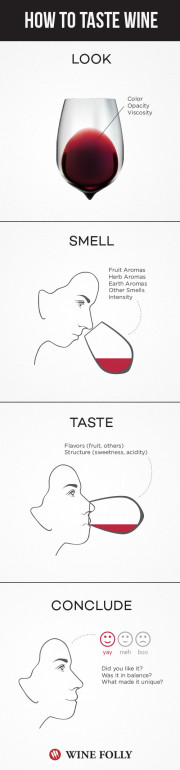

Tasting Wine is an Art
How to Taste Wine:
- 1) Look.
- You want to look at the color and opacity of the wine. Five seconds should be enough to look like you know something.
- 2) Smell.
- You basically want to stick your nose slightly in the glass and try to distinguish hints of fruits, flowers, and other herbal aromas. There are three different categories of aromas:
- Primary- fruit-driven, herbal, and floral notes.
- Secondary- is from the winemaking practices and you might get hints of cheese rind, nut husk, or stale beer.
- Third- comes from aging either in a bottle or oak barrel. From these you get hints of roasted nuts, vanilla, tobacco, leather, or mushrooms.
- 3) Taste.
- To finally taste the wine, you obviously use your tounge. Once you swallow, the feeling in your mouth or the "Finish", is part of the flavor. All wines are going to taste a bit sour because that is the nature of grapes. Some varieties are more bitter and has a lighter flavor while some retain their natural sugar and are sweeter, and some even taste salty.
The texture of wine increases with the alcohol content. The richer texture seems rich because we perceive it as heavier than water. A tannin texture is what you get when your tounge feels like sand paper or the drying sensation of a tounge depressor from the doctors. - 4) Conclusion
- Did you like the wine? Did it have a balance of flavors, alcohol content, bitterness with sweetness? Did it leave you with a fond memory or did you want to spit it out?
--Want a demonstration? Watch this video!!
https://www.youtube.com/embed/mT9LoUFPsEQ